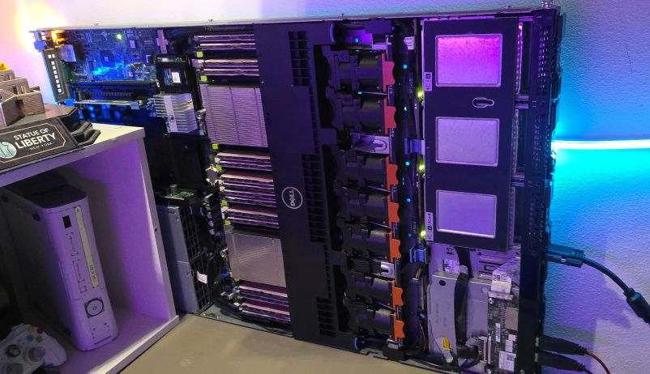
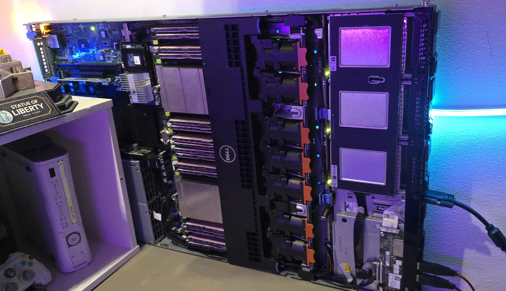

Cloud Server
My cloud server is mostly used for hosting files I commonly use between systems.
This is primarily my GitHub repositories, but I also use it to transfer files instead of grabbing USB sticks.
I also put all of my phone's videos on there as they were using up 108GB of my phone's storage. Now I can afford to use the 4k 60fps or even 8k modes!
There are also some Docker containers which run services such as a web based file manager and some services I use to monitor my game hosting.
Cloud Server Specs
This server has a lot going on. It has 2 power supplies, mostly for redundancy (if one fails, the other seamlessly takes over).
There are 2 active processors - the Intel Xeon E5-2697 v2. There is also 512GB of RAM powering this thing.
I got the high RAM so I can host dev versions of my sites that don't need to get published as often.
There's a 2TB SSD containing the OS, apps, and configs, and a 5.5TB RAID 6 setup.
I use RAID 6 as it allows any 2 drives to fail without loss of any data. With there being 7 drives in my raid, I have a spare
that will automatically activate after the first failure. I have 3 spare drives already in case
I need them. Each drive is 1.2TB on its own, and the RAID makes them look as a single larger drive.
The server also comes with an integrated monitoring system for hardware, raid configs,
and even trends for power usage and temperature.
Current Cloud Projects
Currently I have File Browser for web based file management, Grafana for stats on my services, and SFTP for direct access to the RAID.